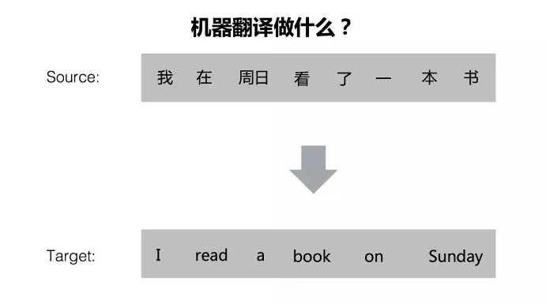
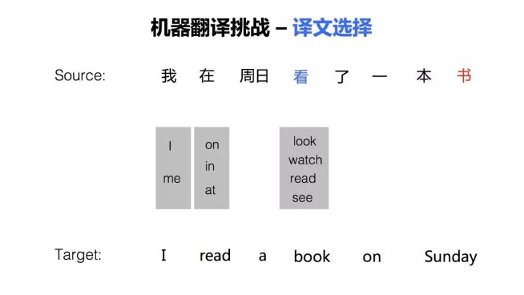
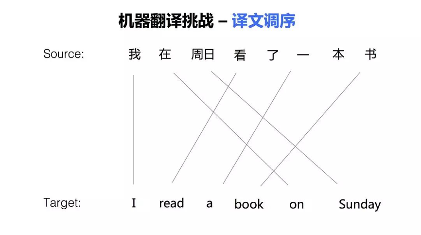
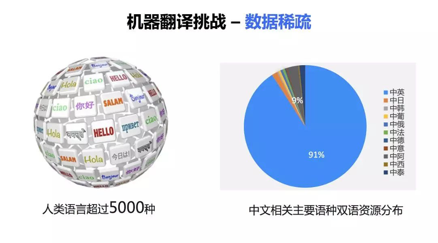

机器翻译基本原理
机器翻译（Machine Translation，MT），又称自动翻译，是指利用计算机将一种自然语言（源语）转换为另一种自然语言（译语）的过程，传统上隶属于计算语言学研究范畴。
 图片1Source代表源语言，Target标记代表目标语言。机器翻译任务就是把源语言的句子翻译成目标语言的句子。
机器翻译是人工智能的终极目标之一，但面临如下的挑战。
第一个挑战，译文选择。在翻译一个句子的时候，会面临很多选词的问题，因为语言中一词多义的现象比较普遍。比如这个例子中，源语言句子中的『看』，可以翻译成『look』、『watch』 『read 』和 『see』等词，如果不考虑后面的宾语『书』的话，这几个译文都对。在这个句子中，只有机器翻译系统知道『看』的宾语『书』，才能做出正确的译文选择，把『看』翻译为『read』 ，『read a book』。
 图片2第二个挑战，是词语顺序的调整。由于文化及语言发展上的差异，我们在表述的时候，有时候先说这样一个成份，后面说另外一个成份 ，但是，在另外一种语言中，这些语言成分的顺序可能是完全相反的。比如在这个例子中，『在周日』，这样一个时间状语在英语中习惯上放在句子后面。再比如，像中文和日文的翻译，中文的句法是『主谓宾』，而日文的句法是『主宾谓』，日文把动词放在句子最后。比如中文说『我吃饭』，那么日语呢就会说『我饭吃』。当句子变长时，语序调整会更加复杂。
 图片3第三个挑战，数据稀疏。据不完全统计，现在人类的语言大约有超过五千种。现在的机器翻译技术大部分都是基于大数据的，只有在大量的数据上训练才能获得一个比较好的效果。而实际上，语言数量的分布非常不均匀的。右边的饼图显示了中文相关语言的一个分布情况，大家可以看到，百分之九十以上的都是中文和英文的双语句对，中文和其他语言的资源呢，是非常少的。在非常少的数据上，想训练一个好的系统是非常困难的。
 图片4